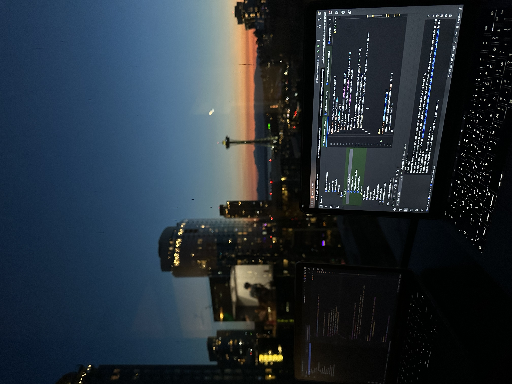
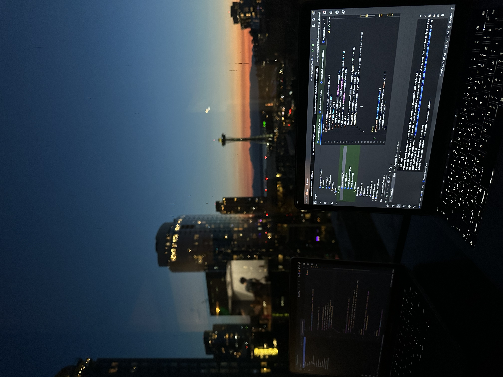

More About My Interests
Beyond academics and internships, I am deeply passionate about trading stocks and researching cryptocurrency trends. I enjoy analyzing market patterns, following economic news, and identifying opportunities for growth in both traditional equities and emerging digital assets. My curiosity about blockchain technology and decentralized finance (DeFi) drives me to explore how crypto innovations are reshaping the financial landscape. Alongside this, I constantly brainstorm entrepreneurial ideas, aiming to find creative solutions for everyday challenges and identifying gaps in the market where technology can make an impact. Outside of my academic and professional life, I enjoy staying active through soccer and regular gym workouts, which help me stay disciplined and energized. Meditation is another important part of my routine, allowing me to maintain focus and manage stress effectively. When it’s time to unwind, I immerse myself in techno music, which fuels my creativity and keeps me motivated. This website offers a glimpse into my world, highlighting not only my academic and professional achievements but also my passions and personal projects. It reflects how I blend technology, finance, and entrepreneurship into everything I do, from developing software and analyzing markets to creating new ideas that bridge the gap between innovation and business success.
 

- Tech Projects: Sensors and algorithms
- Financial Markets: Trading ETFs and crypto
- Entrepreneurship: Building scalable business models